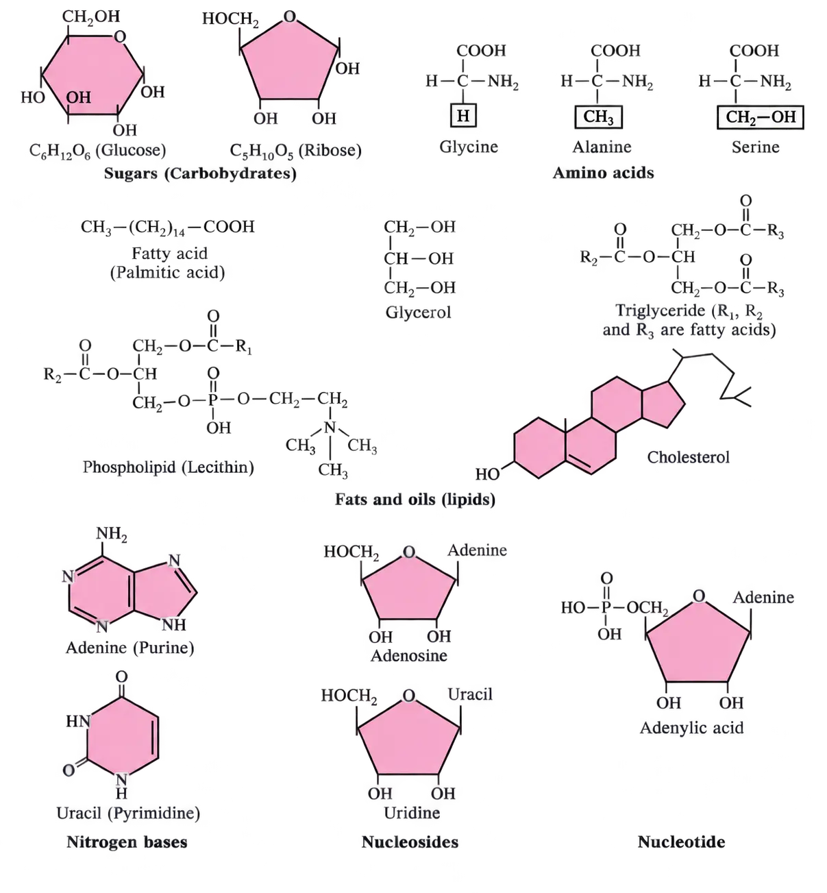
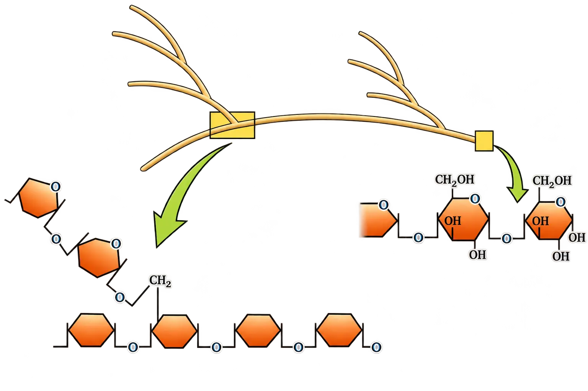
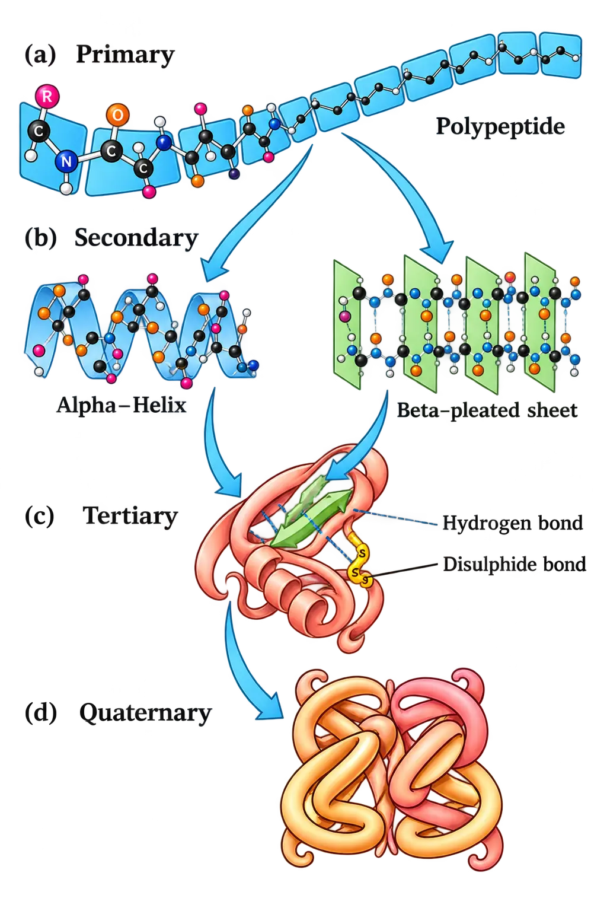
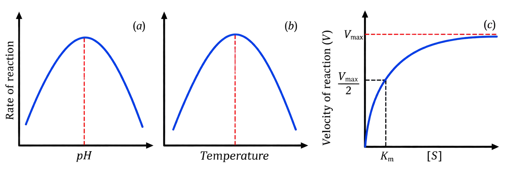

BIOMOLECULES
Biomolecules: Chemical Composition of Living Organisms (Intro)
Think of it like comparing the “ingredient list” of a plant/animal vs the earth’s crust — the ingredients overlap, but the amounts change.
- Elemental analysis comparison: If we analyse plant tissue, animal tissue, or microbial paste, we find elements like C, H, O, etc., and their content per unit mass.
- If we do the same for earth’s crust (non-living), we also get a similar list of elements.
- Hydrogen (H): Earth’s crust 0.14% ; Human body 9.5%
- Carbon (C): Earth’s crust 0.03% ; Human body 18.5%
- Oxygen (O): Earth’s crust 46.6% ; Human body 65.0%
- Nitrogen (N): Earth’s crust very little ; Human body 3.3%
- Sulphur (S): Earth’s crust 0.03% ; Human body 0.3%
- Sodium (Na): Earth’s crust 2.8% ; Human body 0.2%
- Calcium (Ca): Earth’s crust 3.6% ; Human body 1.5%
- Magnesium (Mg): Earth’s crust 2.1% ; Human body 0.1%
- Silicon (Si): Earth’s crust 27.7% ; Human body negligible
9.1 How to Analyse Chemical Composition?
Acid extraction: separating acid-soluble pool and acid-insoluble fraction
Take living tissue (e.g., vegetable piece / liver)
→Grind in trichloroacetic acid (Cl3CCOOH) using mortar-pestle
→Thick slurry formed
→Strain through cheesecloth/cotton
→Two fractions obtained
Filtrate= acid-soluble pool (contains many small, soluble organic compounds)
Retentate= acid-insoluble fraction (material retained on cloth; insoluble components)
“Filtrate” = what passes through the cloth. “Retentate” = what gets retained on the cloth.
Isolation and purification (what is done after extraction)
- Extract the compounds from tissue.
- Apply separation techniques repeatedly until one compound is separated from all others.
- This is called isolation and purification of the compound.
- Then apply analytical techniques to determine the molecular formula and the probable structure.
Biomolecules vs inorganic constituents: how do we detect inorganic matter?
Weigh fresh tissue = wet weight
→Dry it: water evaporates
→Remaining = dry weight
→Burn completely: carbon compounds oxidise to gases (CO2, H2O vapour)
→Residue left = ash
- Elemental analysis reports elemental composition (H, O, Cl, C, etc.).
- Compound analysis identifies the organic and inorganic constituents present in living tissues.
- Inorganic compounds like sulphate, phosphate, etc., can also occur in the acid-soluble fraction.
Burning removes carbon-based stuff as gases — what’s left (ash) is your clue for inorganic minerals.
Representative inorganic constituents of living tissues
- Sodium: Na+
- Potassium: K+
- Calcium: Ca++
- Magnesium: Mg++
- Water: H2O
- Examples of inorganic compounds: NaCl, CaCO3, PO43−, SO42−
Biological Classification of Biomolecules
Biology doesn’t group molecules by “functional groups” (aldehydes/ketones/etc.) the way chemistry often does — instead it clubs them by biological role + biomolecule class.
Amino acidsbuilding blocks of proteins
Nitrogen bases / nucleotidesbuilding blocks of nucleic acids
Fatty acids & lipidsinsoluble cellular constituents; membranes, storage
Sugars (carbohydrates)e.g., glucose, ribose (shown in Fig. 9.1)
Amino acids
- Hydrogen (H)
- Carboxyl group (–COOH)
- Amino group (–NH2)
- Variable R group (determines the specific amino acid)
- Glycine: R = hydrogen
- Alanine: R = methyl (–CH3)
- Serine: R = hydroxy methyl (–CH2OH)
- Acidic amino acids: e.g., glutamic acid
- Basic amino acids: e.g., lysine
- Neutral amino acids: e.g., valine
Lipids
Fatty acids (simple lipids)
- R group could be methyl (–CH3), ethyl (–C2H5), or longer chains with higher number of –CH2 groups.
- Chain length range given: 1 carbon to 19 carbons in the R group (as described).
- Palmitic acid: 16 carbons total (including the carboxyl carbon).
- Arachidonic acid: 20 carbons total (including the carboxyl carbon).
- Saturated fatty acids: no double bond
- Unsaturated fatty acids: one or more C=C double bonds
Glycerol and glycerides (fats and oils)
Glycerol
→
Fatty acids esterified
→
Glycerides
Monoglyceridesone fatty acid esterified to glycerol
Diglyceridestwo fatty acids esterified to glycerol
Triglyceridesthree fatty acids esterified (R1, R2, R3 are fatty acids)
- Oils: lower melting point (example: gingelly oil), so remain liquid even in winters.
- Fats: comparatively higher melting point (hence more solid under similar conditions).
Phospholipids and complex lipids
- Location: Found in the cell membrane.
- Example: Lecithin.
- Complex lipids: Some tissues, especially neural tissues, contain lipids with more complex structures.
Nitrogen bases, nucleosides, nucleotides, and nucleic acids
Nucleosidesadenosine, guanosine, thymidine, uridine, cytidine
Nucleotidesadenylic acid, thymidylic acid, guanylic acid, uridylic acid, cytidylic acid
- DNA and RNA consist of nucleotides only.
- Function: DNA and RNA function as genetic material.
Small Molecular Weight Organic Compounds in Living Tissues

Amino acidsglycine, alanine, serine
Sugars (carbohydrates)glucose (C6H12O6), ribose (C5H10O5)
Lipidsfatty acid (palmitic acid), glycerol, triglyceride, fats & oils, phospholipid (lecithin), cholesterol
Nitrogen basesadenine, uracil (also shown as purine/pyrimidine types)
Nucleosidesadenosine, uridine
Nucleotidesadenylic acid
- Adenine is shown as a purine.
- Uracil is shown as a pyrimidine.
9.2 Primary and Secondary Metabolites
Primary metabolites
Secondary metabolites
Think of secondary metabolites like “extra add-ons” in plants/microbes: not always needed for basic survival steps, but super useful for us (medicine, flavour, colour) and for ecology (interaction/defence).
PigmentsCarotenoids; Anthocyanins
AlkaloidsMorphine; Codeine
TerpenoidsMonoterpenes; Diterpenes
Essential oilsLemon grass oil
ToxinsAbrin; Ricin
LectinsConcanavalin A
DrugsVinblastin; Curcumin
Polymeric substancesRubber; Gums; Cellulose
9.3 Biomacromolecules
Acid soluble pool vs acid insoluble fraction (by molecular weight and composition)
Proteinsacid insoluble
Nucleic acidsacid insoluble
Polysaccharidesacid insoluble
Lipidsacid insoluble fraction
- Micromolecules (small): molecular weight < 1000 Da; generally in acid soluble pool.
- Macromolecules / biomacromolecules (large): found in acid insoluble fraction.
Why lipids appear in the “macromolecular (acid insoluble)” fraction
Tissue grinding disrupts cells
→
Membranes break into fragments
→
Fragments form vesicles (not water soluble)
→
Vesicles separate with acid insoluble pool
Why “insoluble”? Membrane lipids clump into vesicles (tiny bubbles) instead of dissolving like small sugars/amino acids.
What the two fractions represent
- Acid soluble pool ≈ roughly the cytoplasmic composition.
- Acid insoluble fraction = macromolecules from cytoplasm + organelles.
- Together, they represent the entire chemical composition of living tissues/organisms.
Average composition of cells (abundance-based summary)
Water70–90%
Proteins10–15%
Carbohydrates3%
Lipids2%
Nucleic acids5–7%
Ions1%
9.4 Proteins
Basic nature: polypeptides and peptide bonds
Proteins as polymers: heteropolymer vs homopolymer
HOMO/HETERO
Essential vs non-essential amino acids (nutrition linkage)
- Essential amino acids: body cannot synthesise; must come through diet/food.
- Non-essential amino acids: body can make.
- Dietary proteins are the source of essential amino acids.
Functions of proteins + examples
CollagenIntercellular ground substance
TrypsinEnzyme
InsulinHormone
AntibodyFights infectious agents
ReceptorSensory reception (smell, taste, hormone, etc.)
GLUT-4Enables glucose transport into cells
- Collagen is the most abundant protein in the animal world.
- RuBisCO (Ribulose bisphosphate Carboxylase-Oxygenase) is the most abundant protein in the biosphere.
9.5 Polysaccharides
Definition and location
Homopolysaccharides and key examples
CellulosePolymer of glucose; homopolymer
StarchVariant of glucose polymer; energy store in plants
GlycogenAnimal variant; branched (Fig. 9.2)
InulinPolymer of fructose

Reducing end and non-reducing end (polysaccharide chain polarity)
- Right end = reducing end
- Left end = non-reducing end
Starch helices and iodine test; cellulose contrast
Starch helices present
→Holds I2
→Blue starch–I2 complex
Cellulose non-helical
→Cannot hold I2
→No blue complex
Biological and everyday significance of cellulose
Complex polysaccharides (amino-sugars/modified sugars) and chitin
- Amino-sugars and
- Chemically modified sugars (e.g., glucosamine, N-acetyl galactosamine, etc.)
9.6 Nucleic Acids
Definition and placement among macromolecules
Nucleotide: the monomer (3 components)
- Heterocyclic compound (nitrogenous base)
- Monosaccharide (pentose sugar)
- Phosphoric acid / phosphate
Nitrogenous base (heterocyclic)
+Pentose sugar
+Phosphate
Nitrogenous bases: purines vs pyrimidines
- Adenine (A)
- Guanine (G)
- Uracil (U)
- Cytosine (C)
- Thymine (T)
PurinesAdenine (A), Guanine (G)
PyrimidinesUracil (U), Cytosine (C), Thymine (T)
Sugars in nucleic acids: DNA vs RNA
- Ribose (a pentose monosaccharide), or
- 2′-deoxyribose
DNASugar = deoxyribose
RNASugar = ribose
PURE
PURe As Gold → PUrines are Adenine and Guanine.
9.7 Structure of Proteins
“Structure” means different things across disciplines
- Inorganic chemistry: structure often refers to molecular formula (e.g., NaCl, MgCl2).
- Organic chemistry: structure often shown as a 2D representation (e.g., benzene, naphthalene).
- Physics: emphasises 3D views of molecular structure.
- Biology (proteins): describes protein structure at four levels.
Inorganic“Structure” ≈ molecular formula
Organic“Structure” ≈ 2D representation
Physics“Structure” ≈ 3D views
Biology (proteins)“Structure” = four levels
Primary structure of a protein
- Left end represents the first amino acid
- Right end represents the last amino acid
Left end
→1st amino acid
→... sequence ...
→Last amino acid
→Right end
Levels of Protein Structure (continued)
Termini of a Polypeptide Chain
N-terminus
→polypeptide chain
→C-terminus
Secondary Structure: Local Folding (α-helix and other forms)
- α-helix: helical folding of part of the chain (staircase-like).
- Other secondary forms: additional folds in non-helical regions (collectively included under secondary structure).

Quaternary Structure: Assembly of Subunits
PrimaryAmino-acid sequence; has N-terminus and C-terminus
SecondaryLocal folding (e.g., right-handed α-helix; other folded regions)
TertiaryOverall 3D folding of one polypeptide (woollen-ball-like)
QuaternaryArrangement of multiple folded subunits (e.g., Hb = 2α + 2β)
9.8 Enzymes
Nature of Enzymes; Ribozymes
- Primary structure (amino-acid sequence)
- Secondary structure
- Tertiary structure
Active Site (from Tertiary Structure)
Tertiary folding
→pockets/crevices form
→active site
→substrate fits
Enzymes vs Inorganic Catalysts; Thermal Stability
- Inorganic catalysts: generally work efficiently at high temperatures and high pressures.
- Enzymes: get damaged at high temperatures (e.g., above 40°C).
9.8.1 Chemical Reactions
Physical Change vs Chemical Reaction
Physical changeShape changes; bonds not broken
Physical change (state)ice → water; water → vapour
Chemical reactionBonds break + new bonds form
- Inorganic reaction example: Ba(OH)2 + H2SO4 → BaSO4 + 2H2O
- Organic reaction example: hydrolysis of starch into glucose
Rate of a Physical/Chemical Process
Temperature Dependence (Rule of Thumb)
Catalysed vs Uncatalysed Reactions; Carbonic Anhydrase Example
- Without enzyme: very slow; about 200 molecules of H2CO3 formed in 1 hour.
- With carbonic anhydrase: about 600,000 molecules per second.
- Overall acceleration: about 10 million times.
Metabolic Pathway (Multistep Enzyme-Catalysed Reactions)
Glucose
→10 enzyme-catalysed steps
→2 Pyruvic acid
Skeletal muscle (anaerobic)Lactic acid formed
Normal aerobic conditionsPyruvic acid formed
Yeast (fermentation)Ethanol (alcohol) produced
9.8.2 How do Enzymes bring about such High Rates of Chemical Conversions?
Substrate, Product, and the Need for Binding at the Active Site
- Diffuse towards the enzyme’s active site
- Bind within the cleft/pocket (active site)
Think of the active site like a specific “parking spot” — the substrate has to arrive and park correctly before the reaction can proceed.
ES Complex and Transition State Formation
Substrate diffuses to active site
→
ES complex forms (transient)
→
Transition state structure
→
Bonds break/make
→
Product(s) released
Concept of Activation Energy (Energy Profile of a Reaction)
- Y-axis = potential energy content
- X-axis = progress of reaction / progression of structural transformation through the transition state
- If P is at a lower energy level than S → reaction is exothermic (energy released).
- In an exothermic reaction, one need not supply energy (heating) to form product.
- Even if a reaction is exothermic/spontaneous OR endothermic/energy requiring, S must still pass through the high-energy transition state.
Nature of Enzyme Action (Catalytic Cycle)
Eenzyme
Ssubstrate
ESenzyme–substrate complex (transient)
EPenzyme–product complex
Pproduct
Steps of the Catalytic Cycle
1. Substrate binds active site (fits into it)
→
2. Binding induces enzyme shape change (tighter fit)
3. Active site breaks substrate bonds; EP forms
→
4. Products released; free enzyme ready again
- ES is short-lived and converts to product via EP.
- Enzyme is not consumed: after product release, it can bind another substrate molecule and repeat the cycle.
Factors Affecting Enzyme Activity
TemperatureCan inactivate or denature enzyme (via structure change)
pHAffects structure/active site → alters activity
Substrate concentrationRaises rate until saturation → Vmax
Regulatory chemicalsBind enzyme; may inhibit activity
Temperature and pH
- Enzymes function effectively only in a narrow range of temperature and pH.
- Each enzyme has an optimum temperature and an optimum pH where activity is highest.
- Activity declines below and above the optimum values.
Temp/pH moves away from optimum
→Tertiary structure/active site disturbed
→Enzyme activity decreases
Concentration of Substrate

↑ [Substrate]
→↑ collisions with enzyme
→↑ velocity (at first)
→Active sites saturated
→Plateau at Vmax
Chemical Regulation and Inhibition
Inhibitor resembles substrate
→Competes for substrate-binding site
→Substrate binding reduced
→Enzyme action declines
- Because inhibitor occupies/competes for the binding site, the substrate cannot bind effectively → enzyme action declines.
- Example: inhibition of succinic dehydrogenase by malonate, which closely resembles succinate in structure.
- Application: competitive inhibitors are often used to control bacterial pathogens.
Classification and Nomenclature of Enzymes
Oxidoreductases / DehydrogenasesCatalyse oxidation–reduction between two substrates
TransferasesTransfer a group (other than H) from one substrate to another
HydrolasesCatalyse hydrolysis of multiple bond types
LyasesRemove groups without hydrolysis; often leave double bonds
IsomerasesInterconvert isomers (optical/geometric/positional)
LigasesJoin two compounds by forming new bonds (often energy-coupled)
Oxidoreductases / Dehydrogenases
Transferases
Hydrolases
- ester bonds
- ether bonds
- peptide bonds
- glycosidic bonds
- C–C bonds
- C–halide bonds
- P–N bonds
Lyases
Isomerases
- optical isomers
- geometric isomers
- positional isomers
Ligases
- C–O
- C–S
- C–N
- P–O
Co-factors (Apoenzyme, Types, and Roles)
Apoenzyme (protein only)
→+ Cofactor
→Catalytically active enzyme
Prosthetic groupOrganic; tightly bound to apoenzyme
Co-enzymeOrganic; transient association during catalysis; used across multiple reactions
Metal ionRequired by some enzymes; forms coordination bonds at active site and with substrate
Prosthetic Groups
- Example: In peroxidase and catalase (enzymes breaking down hydrogen peroxide to water and oxygen), haem is the prosthetic group and is part of the active site.
Co-enzymes
- NAD and NADP contain the vitamin niacin.
Metal Ions
- Example: Zinc is a cofactor for the proteolytic enzyme carboxypeptidase.
Chapter Summary
- Reactions proceed via unstable intermediate states; the transition state is a high-energy state that must be reached.
- Activation energy is the energy gap between S and the transition state; enzymes reduce this barrier.
E + S
→
ES
→
EP
→
E + P
- Enzyme action involves ES and EP complexes: E + S → ES → EP → E + P, and the enzyme is reused.
- Enzyme activity depends on temperature, pH, substrate concentration (Vmax, Km), and inhibitors (competitive inhibition example: malonate vs succinate for succinic dehydrogenase).
6 enzyme classesclassified by reaction type
Oxidoreductasesredox reactions
Transferasestransfer functional groups
Hydrolaseshydrolysis reactions
Lyasesadd/remove groups without hydrolysis
Isomerasesrearrangements within a molecule
Ligasesjoining molecules (often ATP-dependent)
Namingidentified by a four-digit number
Apoenzymeprotein part alone (inactive if cofactor needed)
Cofactorsnon-protein helpers required by some enzymes
Prosthetic grouptightly bound (e.g., haem)
Coenzymeorganic, loosely bound (e.g., NAD/NADP with niacin)
Metal ioninorganic helper (e.g., Zn in carboxypeptidase)
BIOMOLECULES (Wrap-up: Macromolecules & Their Functions)
Levels of Protein Structure
PrimaryLinear sequence of amino acids in a polypeptide chain
SecondaryLocal folding patterns (e.g., α-helix, β-pleated sheet) mainly via H-bonds
TertiaryOverall 3D folding of a single polypeptide; forms functional domains/active sites
QuaternaryAssociation of ≥2 polypeptide subunits into a functional protein complex
Nucleic Acids: Role in Cells
Polysaccharides: Structural & Storage Roles
- Structural support: components of cell walls in plants and fungi
- Structural protection: component of exoskeleton of arthropods
- Energy storage: stored reserve carbohydrates
- Starch: storage polysaccharide in many plants
- Glycogen: storage polysaccharide in animals (and also in some other organisms)
Proteins: Major Cellular Functions
EnzymesCatalyse biochemical reactions
AntibodiesDefence/immune function
ReceptorsReceive signals; enable cellular responses
HormonesChemical messengers coordinating body functions
Structural proteinsProvide strength/support to cells and tissues
- Collagen is the most abundant protein in the animal world.
- Ribulose bisphosphate Carboxylase-Oxygenase (RuBisCO) is the most abundant protein in the entire biosphere.
Enzymes and Ribozymes
Enzymes
→Protein catalysts
Ribozymes
→Nucleic-acid (RNA) catalysts
Key Properties of Proteinaceous Enzymes
- Substrate specificity: act on specific substrate(s)
- Optimum temperature: maximal activity occurs at a particular temperature
- Optimum pH: maximal activity occurs at a particular pH
- Denaturation at high temperatures: high heat disrupts protein structure, reducing/abolishing activity
- Lower activation energy: reduce the energy barrier for the reaction
- Increase reaction rate greatly: catalysis markedly speeds up biochemical reactions